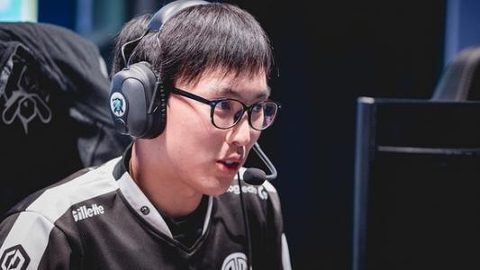

基本信息
姓名： 彭亦亮
id：Doublelift
别名：大师兄
性别：男
出生年月：1993年7月19日
个人荣誉
2015年北美LCS春季赛冠军
2016年北美LCS春季赛亚军
2016年北美LCS夏季赛冠军
2017年北美LCS夏季赛冠军
2018年北美LCS春、夏季赛冠军
2019年北美LCS春、夏季赛冠军
2019年MSI季中赛亚军
2020年北美LCS夏季赛冠军
个人生涯简介
2011年，彭亦亮进入EG战队并随队参加S1世界总决赛并进入四强（这是大师兄唯一一次拿到四强，但是S1只有8只队伍参赛）。2012年加入CLG，打入S2世界总决赛，遗憾止步16强。
2015年9月，CLG夺得LCS夏季赛冠军，以北美第一种子的身份晋级S5世界总决赛。2015年11月1日，TSM官方宣布Doublelift离开CLG正式加盟TSM。
2016年8月，TSM在LCS夏季季后赛半决赛中3：0横扫老对手CLG，最后夺得夏季赛冠军，以北美第一种子的身份再次进军S6世界总决赛。2016年11月，TSM官方宣布Doublelift将缺席2017年LCS春季赛，休赛一个赛季。
2017年4月，TSM官方正式宣布ADC选手Doublelift归队，并将出战2017年北美LCS夏季赛。2017年9月，TSM在2017年北美LCS夏季赛中3：1击败IMT卫冕冠军，实现三连冠成就。
2017年11月，Team Liquid在官网发布公告，正式宣布Doublelift作为ADC选手加盟。2018年4月，Team Liquid夺得LCS春季赛冠军，Doublelift获得自己的第4座联赛冠军奖杯。
2018年9月，Team Liquid在LCS夏季赛中蝉联冠军，Doublelift5夺联赛冠军。2019年4月，Team Liquid在当季春季赛决赛中击败TSM，Doublelift6次获得联赛冠军。
2019年5月19日，Team Liquid在MSI决赛上，以0：3战绩落败G2战队，无缘冠军。2019年8月25日，Team
Liquid在当季夏季赛决赛中以3：2击败C9，Doublelift在7次获联赛冠军的同时也再次进军世界赛 。
2020年8月25日，Team SoloMid在当季夏季赛决赛中以3：2击败Fly，Doublelift在8次获联赛冠军的同时也再次进军世界赛。同年11月26日，Doublelift在推特上宣布退役。